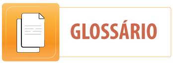

41º ENCONTRO
Texto 1 - De olho no meio ambiente

Pesquisa mostra que os brasileiros estão mais ligados em temas ambientais
Em tempo de
Rio+20, a Conferência das Nações Unidas sobre o Desenvolvimento Sus-
tentável, é importante pensar sobre o
meio ambiente. Você se importa com ele? Faz alguma
coisa para tornar o
planeta um lugar melhor para viver? Essas são algumas das perguntas
que uma pesquisa divulgada em maio pelo Ibope em parceria com a Confederação Nacional
da Indústria (CNI) tenta responder.
Esse estudo mostra que a população brasileira está mais preocupada com as
questões ambientais. De acordo com os resultados, 94% das pessoas estão
mais atentas ao tema. Esse número aumentou 14% do ano passado para cá.
O brasileiro está mais preocupado com o meio ambiente, mas nem metade da população
tem acesso à coleta seletiva de lixo.
A pesquisa foi feita com 2.002 pessoas de 141 cidades. Você sabe o que mais incomoda
essas pessoas? O desmatamento está no topo da lista, com 53% dos votos, e, logo depois,
vem a poluição da água, com 44%.
Outros pontos importantes quando o assunto é meio ambiente são a reciclagem e a co-
leta seletiva de lixo. A reciclagem foi considerada muito importante por 67% dos entrevistados.
Apesar disso, nem metade das pessoas tem acesso à coleta seletiva.
Agora, será que as pessoas estão fazendo a sua parte para preservar o meio ambiente?
Só 18% responderam que sim. As atividades mais citadas por elas foram a economia de ener-
gia elétrica e a redução no desperdício de água.
O gerente de meio ambiente e sustentabilidade da CNI, Shelley Carneiro, acredita que
o maior desafio do país seja atingir o desenvolvimento sustentável. “Isso só poderá acontecer
com educação e informação disponíveis a todos e um empenho nacional em fazer do país um
lugar melhor para viver”, completa. E você, já está fazendo a sua parte?
Disponível no site http://chc.cienciahoje.uol.com.br/de-olho-no-meio-ambiente/ Acesso em 15 nov.2012.
Para ajudá-lo a compreender o texto, procure inferir o sentido das palavras abaixo:
Texto 2 - Restos que adoecem
A cada ano, novas safras de celulares, computadores e tablets surgem nas prateleiras
das lojas, angariando milhares de consumidores ávidos para botar as mãos em modelos mais
modernos e potentes. De uma hora para outra, o aparelho que atendia tão bem todas as ne-
cessidades se torna velho, obsoleto – e descartável. Por falta de informação ou de interesse
mesmo, muitas pessoas acabam jogando fora os antigos objetos em locais inadequados, e,
mesmo sem saber, podem estar colocando em risco a própria saúde. “Quando os catadores
de lixo desmontam um computador em busca do cobre, por exemplo, acabam se contaminan-
do com o mercúrio”, explica Teresa Cristina Carvalho, coordenadora do Centro de Descarte
e Reuso de Resíduos de Informática (Cedir), órgão vinculado à Universidade de São Paulo
(USP), que implementa práticas de descarte sustentável de lixo eletrônico, incluindo bens de
informática e telecomunicações.

Quando despejado indevidamente em aterros, exposto à chuva e ao sol, o lixo eletrô-
nico passa a liberar substâncias altamente prejudiciais à saúde, como o mercúrio, o chumbo,
o cádmio e o berílio. “Os lençóis freáticos acabam contaminados com esses metais pesados.
Como resultado, pessoas que beberem dessa água, ou com ela lavarem alimentos, serão in-
toxicadas”, completa a especialista.
CHAVES, Gláucia. Revista do Correio. In Correio Braziliense: 25 nov.2102. Fragmento.
Para ajudá-lo a compreender o texto, procure inferir o sentido das palavras abaixo:
I. HABILIDADES DE LEITURA
1. O assunto do Texto 1 é
(A) coleta seletiva.
(B) desmatamento.
(C) meio ambiente.
(D) reciclagem.
2. O Texto 1 exemplifica um problema ambiental mencionado no Texto 2 relacionado com
(A) energia elétrica.
(B) coleta seletiva.
(C) desmatamento.
(D) meio ambiente.
3. No Texto 1, a ilustração está relacionada com
(A) coleta seletiva.
(B) desmatamento.
(C) energia elétrica.
(D) poluição da água.
4. A finalidade do Texto 2 é
(A) divulgar a venda dos aparelhos eletrônicos.
(B) ensinar a manusear os aparelhos eletrônicos.
(C) informar sobre os danos causados pelo lixo eletrônico.
(D) mostrar os elementos químicos presentes no lixo eletrônico.
5. No Texto 1, na opinião das pessoas, a questão ambiental mais preocupante é
(A) desmatamento.
(B) desperdício de água.
(C) gasto de energia elétrica.
(D) poluição da água.
6. A conjunção destacada em “e, mesmo sem saber, podem estar colocando em risco a própria saúde.” (l. 5-6), indica
(A) adição.
(B) alternância.
(C) conclusão.
(D) explicação.
II. GRAMÁTICA NO TEXTO
7. Reescreva o trecho “O brasileiro está mais preocupado com o meio ambiente, mas nem metade da população tem acesso à coleta seletiva de lixo.”, linhas 9-10 do Texto 1, substituindo brasileiro por brasileiros e metade da população por pessoas.
8. No trecho “A cada ano, novas safras de celulares, computadores e tablets surgem nas prateleiras das lojas, angariando milhares de consumidores ávidos para botar as mãos em modelos mais modernos e potentes. (l. 1-3), no Texto 2, há 4 adjetivos.
Identifique-os e indique a que nomes eles se referem.
9. Crie uma frase com cada um dos adjetivos identificados acima.
a.
b.
c.
d.
III. PENSANDO O TEXTO
10. Copie, do Texto 2, o trecho que aponta uma séria consequência de se despejar o lixo eletrônico indevidamente em aterros.
11. Comente o título do Texto 2 “Restos que adoecem”.
IV. OPINANDO SOBRE O TEXTO
12. O Texto 1 finaliza com a pergunta “E você, já está fazendo a sua parte?” Você concorda com essa pergunta? Responda-a comentando como você pode contribuir para a preservação do meio ambiente.
V. DESENVOLVENDO A ESCRITA - ATIVIDADE PARA CASA
Escreva um texto sobre a importância da água na nossa vida.
VI. SOBRE O GÊNERO
Artigo
1.
Os guardiões do verde, de José Maurício Séllos, Editora Uni Duni.
2.
Os amigos do meio ambiente ajudando a preservar a escola, de Soraya Borges, Editora Sol Livros.